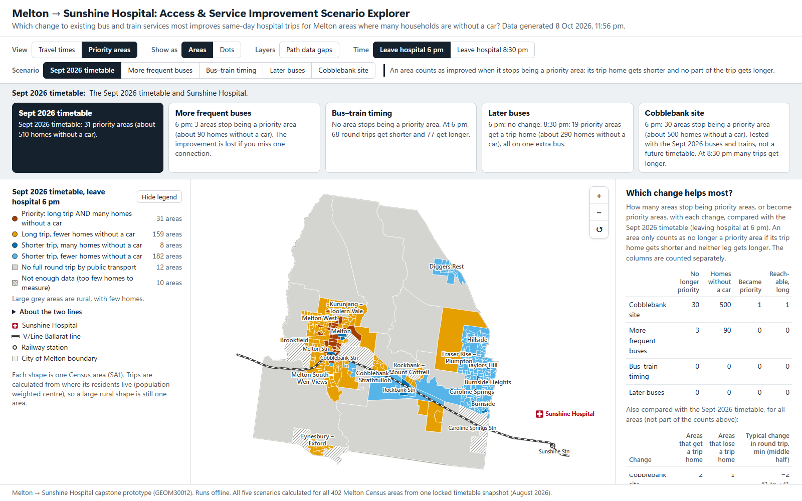

Explore the map
The explorer is a map of every area in the City of Melton. Choose a change and a time, then click an area to see its trip there and its trip home.
- Opens in a new tab and works without internet.
- Best on a laptop or a larger screen.
